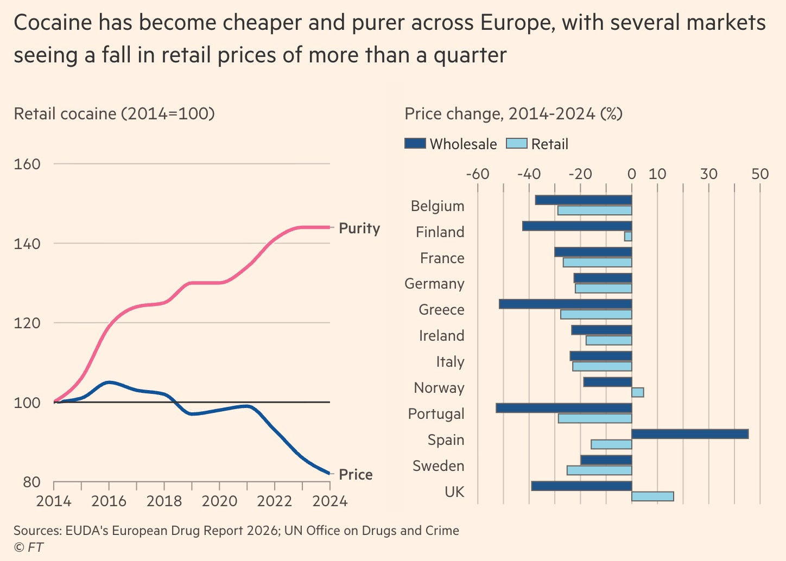
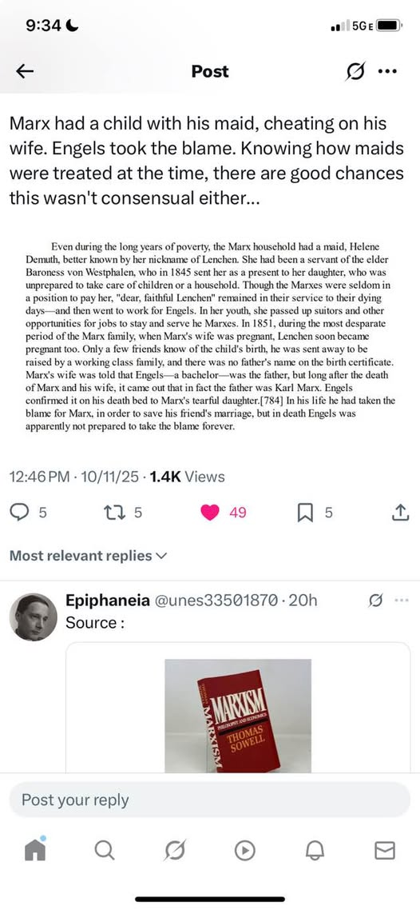

WEEKLY REMINDERS/ANNOUNCEMENTS – EWOT, Week 4
Readings and Topics this Week: We will be spending a couple of weeks or more on our Economic Evolution – I try to break it up into two pieces, first the historical record and second a consideration of the ideas that have contributed to it. You can read through BOTH Sections B and C of the reading list at your leisure.
You should NOT be memorizing the data we put up, that is not the purpose of our exploration.
Recitation: Will MOLOCH eat and destroy us? Come find out.
Weekly AssignmentS: Who doesn’t love a good list? Who doesn’t love games? Both week four assignments are ready, and they are both Part One of a Two Part series.
Course Productivity Modules and Interfaces
All of your course questions answered, without having to read:
https://chatgpt.com/g/g-6a763182a9d08191b73bba0904ed9144-econ-108-syllabus-what-do-you-need-to-know
Everything you could want to know about the course topics and readings … without having to read them: the UNReading List: https://chatgpt.com/g/g-6a6b783f83a881919379581ca86905d8-the-ewot-unreading-list
Office Hours Site, previous announcements resources: https://rochesterrizzo.github.io/Rizzo-Hours/index.html or tiny.cc/RizzoHours
The Economic Demonology Project: https://rochesterrizzo.github.io/economic-demonology/
Exams: Please make note of the Exam dates and times. READ OUR SYLLABUS and use the AI to learn about them. The exams are held outside of class-time. Do not make travel arrangements that conflict with either of our two midterms or our final exam. We do make accommodations for students with University of Rochester conflicts. Your first exam is on Friday, October 2nd. Yes, “it is on the test,” and be prepared to explain your thinking in clear, concise writing. EXAMS WILL NOT BE GIVEN PRIOR TO, OR SUBSEQUENT TO, THIS DAY.
The exam structure and rules are not likely to match what former students have experienced. The exams, for example, were recently open note, open book, open Chat. Not anymore. More specific exam information is already on Blackboard and will be included in next week’s announcement.
Some Advice
Read through your notes casually once per week – this makes
exam preparation go much more smoothly.
TA Office Hours and Resources
Look for an announcement from our Head TA Katherine Watai.
My Availability
I am going off of electronics from Friday nights until Monday
morning. Call Alexa or Katherine if there is a serious issue, and they
will route communication to me. Feel free during the week to call or
text.
For the most up to date info on my office hours availability, and campus whereabouts and other ways (possibly) to meet and get in touch with me, check this announcements page each week and/or subscribe to my Office Hours Blackboard page at tiny.cc/RizzoHours. I update my calendar weekly on that page, and include other sometimes useful information on it for you.
Monday’s office hours need to end by 12:15pm unfortunately and Wednesday there are currently not hours available due to other faculty commitments.
Thanks to those of you who dropped by for our outdoor lunch discussions this week.
This Week at Rochester
September 18–25
Looking for something beyond class? Here are campus sports, performances, talks, and opportunities coming up:
Friday, Sept. 18 | 2–3 p.m. — Careers in Mathematics Panel. Explore career possibilities in mathematics. Hylan Hall, Room 202.
Saturday, Sept. 19 | Noon and 3 p.m. — Cheer on the Yellowjackets. Women’s soccer hosts Otterbein at noon; field hockey hosts Susquehanna at 3 p.m. Both at Fauver Stadium.
Saturday–Sunday, Sept. 19–20 | 7:30–9 p.m. — Versa-Style: Rooted Rhythms. Street dance at Sloan Performing Arts Center’s Smith Theater. General admission: $15.
Monday, Sept. 21 | 7:30 p.m. — Eastman Wind Orchestra. Free concert at Kodak Hall, Eastman Theatre.
Tuesday, Sept. 22 | 6–7 p.m. — The Impact of AI in Engineering. Online alumni panel exploring AI and engineering careers.
Wednesday, Sept. 23 | 1–4 p.m. — Global Fair. Explore study abroad programs and international opportunities. Hirst Lounge, Wilson Commons.
Wednesday, Sept. 23 | 4–6 p.m. — Fenno Award Ceremony and Lecture. Political inquiry and scholarship at Schlegel Hall’s Eisenberg Rotunda.
Wednesday, Sept. 23 | 5–6 p.m. — Plutzik Reading: Christian Wessels. A literary reading in the Welles-Brown Room, Rush Rhees Library.
Wednesday, Sept. 23 | 6–7:30 p.m. — Fall Alumni Career Chats. Connect with alumni in the May Room, Wilson Commons.
Thursday, Sept. 24 | 4–6 p.m. — Fall Career Expo. Meet employers and explore opportunities. Feldman Ballroom, Douglass Commons.
Friday, Sept. 25 | 2–3 p.m. — Data Science and AI Research Symposium. Featuring Benjamín Castañeda and Sean Crowell. Wegmans Hall 1400, with an online option.
Friday, Sept. 25 | 2–4 p.m. — ISO Community Resource Fair. Discover community resources at Feldman Ballroom, Douglass Commons. Free.
All times Eastern. Check event links for registration and admission details. More options: University events calendar · Yellowjackets athletics schedule.
Braddock Bay Raptor Research: I sent …
https://www.bbrr.org/2027-spring-internships/ in their Hawk Watch and Owl Count and Raptor Banding capacities

Upcoming Special Events
Department of Economics Special Event

Title: Trade War: The View from Across Lake America!
Who: Joe Steinberg of the University of Toronto
Date: Tuesday, September 29th
Time: 6pm to 7pm
Location: Morey 321
More Info: It will be followed by a reception in Morey's Rettner Gallery with Dinosaur BBQ from 7-8:30.
RSVP for Food! Please register for the reception by Friday, September 25th using this link, so we can have a reasonable count for our reception order.
Link: https://form.jotform.com/262586026121048
The Politics and Markets Project, Moderated Panel Discussion Hosted by Professor David Primo
Title: AI and privacy (both thinking about government regulation and things like surveillance pricing, or, getting good deals!)
Date: Wednesday, November 4th
Time: 7:30pm to 8:30pm
Location: Wegmans Hall, 1400.
More Info on the PMP: Follow on Instagram
Department of Economics Special Guest Lecture

Title: Human Capital for Humans, with moderation by U of R Economics Undergraduate Isaac Miller
Who: Pablo Pena of the University of Chicago
Date: Thursday, October 8th
Time: TBD
Location: TBD
More Info: Why do people marry, have kids, invest in health, or choose a career? Economics has an answer, and it's not "supply and demand," it's human capital theory, the framework Nobel laureate Gary Becker built and spent his career applying to every domain of human life. Pablo Peña studied under Becker at Chicago, taught his famous course after him, and has now written the accessible version of that legendary class: Human Capital for Humans.
Join us for a talk and conversation with Professor Peña about the book — how economists think about parenting, aging, marriage, and the everyday decisions that shape who we become. Expect a short talk, a moderated discussion, and open Q&A. Copies of the book will be available for purchase (and signing) at the event.
About Professor Pena: Pablo Peña first encountered human capital theory twenty years ago as an undergraduate captivated by a course taught by Nobel laureate Gary Becker at the University of Chicago — an experience he's described as immediately clarifying. That encounter led him to TA the course, and eventually to teach it himself. Peña is now an Associate Instructional Professor in Economics and the College at the University of Chicago, specializing in applied price theory, human capital theory, and empirical economics, and his research uses experimental and quasi-experimental methods and large datasets to test economic theories with actionable applications for business, nonprofits, and government. Outside academia, he co-founded Microanalitica, previously served as Director of Private Sector Partnerships at the Development Innovation Lab, and headed Economic Studies at Mexico's National Banking and Securities Commission. He earned his Ph.D. in Economics from the University of Chicago.
His book, Human Capital for Humans: An Accessible Introduction to the Economic Science of People (University of Chicago Press, 2025), has been nominated as a finalist for the Manhattan Institute's 2026 Hayek Book Prize, and has drawn praise from economists including Steven Levitt, Tyler Cowen, and Nobel laureate Michael Kremer.
Department of Economics PIZZA and PAYOFFS Special Event
Title: Pizza and Payoffs: Everything you wanted to know about the Econ major — courses, careers, and what you can actually do with an economics degree.
Who: Professor Lisa Kahn and special guest Chris Nosko
Date: mid-November
Time: TBD
Location: TBD
More Info: Chris Nosko is the head economist for Amazon!
Supply and Demand Mechanics Lab
Look for an announcement from our TA staff
Details: Tuesday nights. Great turnout last week. We will be running real applications of this in recitatin soon.
Some Items that Caught Our Attention
The Soft Hard Bigotry of Low Expectations? NYS
Drops the Regents, Because it is Unfair to Expect All Students to Be
Able to Do Them. In what has to be the quote of the week, “you
don’t assess a fish on climbing a tree because fish can’t climb trees.”
That doesn’t sound like it is treating everyone as equally capable of
learning, and certainly isn’t the attitude of a can do country trying to
launch itself into progress. And remember, the
current regents exams, as you all know, are basically a joke.
The Normalization of Violence is Not OK: The members of two California nurse unions decided to handle ongoing labor negotiations with Prime Healthcare in dignified fashion: by going around the neighborhood where Prime Healthcare executives live and posting threatening fliers with detailed displays of their houses, a totally-not-unsettling experience, I’m sure, on the heels of full-blown Mangione bloodlust in this country. The California Post reports that activists for the unions canvassed the Los Angeles neighborhood of Brentwood — home to members of the Prime CEO’s family and other Prime executives — where they “posted fliers featuring aerial photographs, square-footage details, and other information about executives’ private homes,” with charming messages like “track them down” and “[they] can’t hide.” Meanwhile, a union attorney allegedly claimed the harassment would only stop if Prime’s CEO came to the table for negotiations, but in the spirit of #NeverForget, I’m suddenly remembering a lesson from 9/11 which I hope this CEO heeds: sorry nurses… but we don’t negotiate with terrorists.
So expanding insurance access through Obamacare didn't do anything to mortality of the poorest, but it did do so for those better off. So, have a nice day. Explain that result, and more important, what do the results imply for how we think about and treat other societal maladies.
On Not Fledging and the Knock On Effects for Serious Intellectual Life: Horwitz is in the business of playing a version of mom for local college students. Concierge companies offering student support have existed for decades. But in recent years, a new crop of upstarts — such as Horwitz’s company, MindyKnows; the Bama Mama in Alabama; the GA Mom in Georgia; and Campus Mom in Texas — have met additional demand from a new generation of worried parents…
The specific services vary here and there, but share commonalities. Campus Mom offers “holistic wellness check-ins,” laundry services and sorority recruitment support packages, sent to the sisters to up a child’s odds of acceptance. Carrie Eckhardt, the Bama Mama, will clean students’ dorm rooms and check in if parents haven’t heard from their child in a few days (“just pop in and say hi, and take a picture and send it to their mom”)…
Horwitz, for her part, brings students balloons on their birthdays and chicken soup when they’re sick, sits with them in the emergency room and picks up their prescriptions if they’re busy. She bakes homemade challah, coordinates with the bedbug exterminator, texts photos and updates to faraway parents and doles out recommendations on the best local doctors and landlords.
Own Goal, Energy Edition #992775: “Winter hasn’t started, and Maine heating oil already averages $5.39 a gallon. That’s 62 percent higher than it was at this time last year. Some Maine dealers are already approaching $6.
And we’re starting with less fuel in the tank. New England distillate inventories — heating oil and diesel — are 26 percent lower than last year.
This winter is already more expensive, and it hasn’t started yet.”
In Today’s Edition of Have a Nice Day: China vs. the US and the Costs of Slowing Down American AI Devolopment. “During the 2023 U.S.-China nuclear talks, America proposed missile-launch notifications, a nuclear crisis hotline, and processes to limit the use of outer space for military conflict. China declined all of those. Blame the U.S. if you wish (do we always keep our word?), but that is what happened.
China also broke off meaningful arms control talks. You may think it is their right to play catch-up, and to be cynical of our motives, but that is what happened.
How well did China exchange timely information about Covid, and cooperate with stopping its initial spread?
Get the picture?
If you start with China in your discussion, you will end up with sensible proposals before getting too caught up in your moods of the day. If you are reading proposals or for that matter tweets for AI regulation, and the writer does not deal with these China issues in a forthright and very specific manner, you should be very suspicious indeed”
Or Perhaps Texas and Oklahoma Secede Next? “With a separatist referendum just weeks away, a growing trade war between her home country and the US to navigate, and a potential tsunami of demand for Alberta’s cheap fuel accumulating from aspiring data-center builders, now would seem an inopportune time for Smith to be confronted with an explosive leak detailing the inner contemplations of her cabinet as she tries to thread the natural gas needle. That’s exactly what went down last week, and the blowback has been swift”
What’s a Few $100 Billion Among Friends? Iran War increased energy costs alone by $100 billion … so far.
More on California’s $20 Minwage (sponsored by Walmart and friends): We study the employment effects of California’s $20 fast-food minimum wage. … We find evidence of negative employment effects, but they are concentrated among small chains, among which the policy also slowed entry and increased exit. Thus, the primary effect of the fast-food minimum wage was to disadvantage small chains, albeit with modest overall employment effects thus far.
I Predict That Virtually NONE of Micron Will Be Built in Syracuse: So where is our mythical “manufacturing renaissance” supposed to take place? Where will we build the steel mills and aluminum smelters that we need? Probably not Marin County, California. So how about in the most middle American state of them all? Here’s a Bloomberg headline and subhead:
Trump Supporters Imperil $4 Billion Aluminum Plant Central to His Industrial Push
Oklahoma residents fear toxic emissions, threatening an effort to restore US industrial might.
Well, it was a nice idea. Perhaps it could be built in China.
Other Reasons to Short Salt: the finance and enrollment crisis at Syracuse U: “In spring of 2025, enrollment officers at Syracuse University realized they weren’t going to fill the class in the fall.
They responded by making offers of up to $200,000 in additional merit aid after the May 1 commitment deadline. The tactic infuriated families whose kids had already accepted offers and received smaller packages.
Nishita Mukherjee was admitted to Syracuse in spring 2025 but turned it down partly because she received very limited aid.
But on May 2, just after she committed to California Polytechnic State, Syracuse reached back out with a surprise offer: $20,000 off a year. Mukherjee was stunned; she didn’t know colleges offered money, unprompted, after decision day.
In Syracuse’s email, reviewed by The Wall Street Journal, the school said the money was a “personal distinction award,” an irony not lost on Mukherjee—she hadn’t notified the school of any new achievements since submitting her application.
“I knew in the back of my mind it was very transactional,” she said. Then came another offer, for an additional $20,000 off a year. In total, it was the biggest scholarship she received from any of the roughly 20 colleges she applied to.
She was initially excited, but also figured Syracuse might be struggling to fill its freshman class. She turned the school down. “At that point, especially by the end of May, I was pretty set on staying” with Cal Poly, she said.”
Continuing Reasons to Short All Universities: the hiring freeze is concentrated in exactly the sectors that absorb new graduates: tech, consulting, and finance stopped hiring while in-person service sectors kept adding workers. …The share of each cohort holding a bachelor’s degree has been rising for decades, so every year more graduates compete for the professional entry jobs a degree is supposed to unlock, while young workers without degrees have grown scarcer, tightening the market they compete in. That trend is too gradual to explain a break in the last three years by itself. But it’s the background condition that made the graduate market vulnerable: a long-building oversupply that the hiring freeze and AI turned from pressure into inversion. I will say it 73,000 times, think hard about how you approached your college education. Mail it in, take easy classes, and do whatever everyone else is doing. Or do it right.
Smash(ed) Burger: “We analyze the effect of California's $20 fast food minimum wage (Assembly Bill 1228), enacted in September 2023 and implemented in April 2024, on consumer prices using the Bureau of Labor Statistics' Consumer Price Indices for food away from home across 21 metropolitan statistical areas. Food away from home prices in California's four in-sample MSAs increased by 3.3 to 3.6 percent relative to 17 control MSAs through December 2024” Like they say, no free (fast food) lunches.
* * * * *
CHART(S) OF THE WEEK: Drug War

PHOTO OF THE WEEK: Reasons to Work in Health Care Software?
Epic Systems fantasy-themed corporate headquarters in Wisconsin, with buildings that look like castles, quaint medieval towns, and the Emerald City of Oz
VIDEO/DOCUMENTARY/BOOK/CARTOON, ETC OF THE WEEK: Cancel Karl!

* * *QUOTE * * *
Truth is the only safe ground to stand upon."
- Elizabeth Cady Stanton